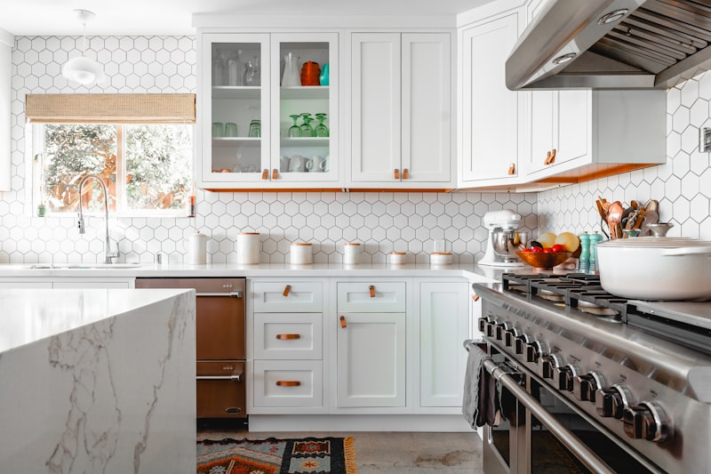
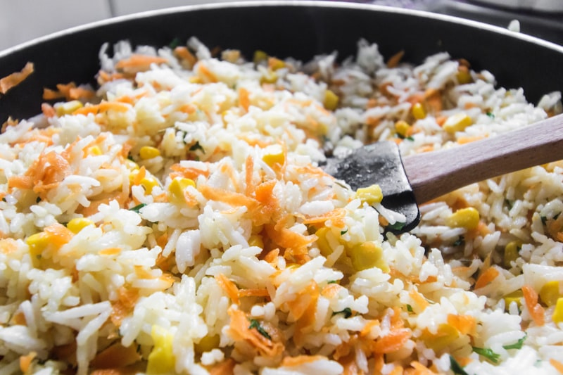

Atelier Notes & Cookware Trends

Culinary Journal

How our master coppersmiths shape copper sheets, set handles, and verify wall thickness.
Read Journal →
Understanding steel carbon content, heat cycles, tempering hardness, and edge retention.
Read Journal →
How to restore copper luster, care for interior tin linings, and clean iron handles.
Read Journal →Exploring prep zones, copper tool racks, oak boards alignment, and chef accessibility.
Read Journal →
From royal palace kitchens to modern Michelin-starred restaurant custom commissions.
Read Journal →
How our carpenters select end-grain oak, apply beeswax finishes, and rout juice grooves.
Read Journal →
How to pair charcoal counters, copper pots racks, and warm lighting for design shoots.
Read Journal →
How our hardware engineers cast, temper, and copper-coat handle rivets to prevent shifts.
Read Journal →How to cushion tin linings, box iron handles, and construct custom wooden crates.
Read Journal →
How custom rosewood scale shapes allow perfect balance without fatiguing hands.
Read Journal →
An analysis of molten tin brushing, copper bonding, and chemical resistance to tomatoes.
Read Journal →
How to fold structured pot sets, select linen wraps, and integrate wood crates.
Read Journal →